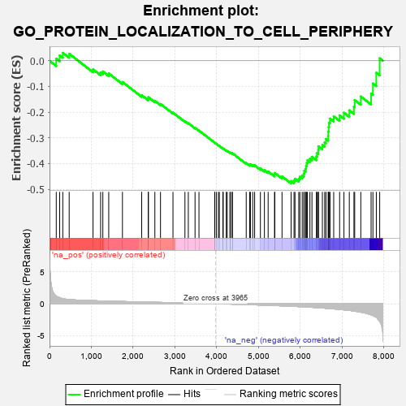
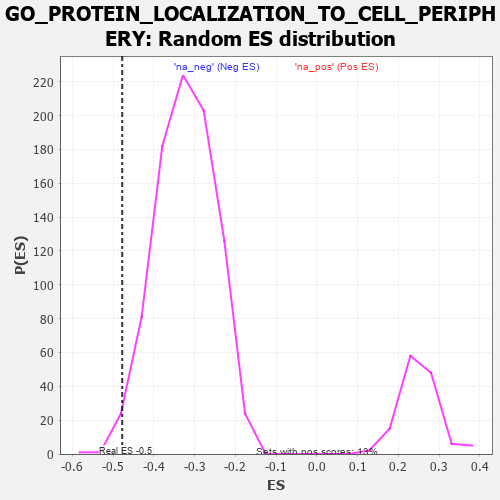

| | | Dataset | 7d |
| Phenotype | NoPhenotypeAvailable |
| Upregulated in class | na_neg |
| GeneSet | GO_PROTEIN_LOCALIZATION_TO_CELL_PERIPHERY |
| Enrichment Score (ES) | -0.4774398 |
| Normalized Enrichment Score (NES) | -1.4828956 |
| Nominal p-value | 0.017321017 |
| FDR q-value | 0.21019682 |
| FWER p-Value | 1.0 |
Table: GSEA Results Summary

Fig 1: Enrichment plot: GO_PROTEIN_LOCALIZATION_TO_CELL_PERIPHERY
Profile of the Running ES Score & Positions of GeneSet Members on the Rank Ordered List
| PROBE | GENE SYMBOL | GENE_TITLE | RANK IN GENE LIST | RANK METRIC SCORE | RUNNING ES | CORE ENRICHMENT | | 1 | CSRP3 | | | 161 | 1.186 | 0.0083 | No |
| 2 | NSF | | | 243 | 0.947 | 0.0210 | No |
| 3 | CNST | | | 317 | 0.792 | 0.0309 | No |
| 4 | LRP1 | | | 470 | 0.648 | 0.0273 | No |
| 5 | AKT1 | | | 1040 | 0.476 | -0.0333 | No |
| 6 | PPIL2 | | | 1222 | 0.443 | -0.0455 | No |
| 7 | PACS1 | | | 1275 | 0.435 | -0.0415 | No |
| 8 | P2RY1 | | | 1416 | 0.407 | -0.0494 | No |
| 9 | SLMAP | | | 1744 | 0.346 | -0.0825 | No |
| 10 | C2CD5 | | | 2204 | 0.276 | -0.1340 | No |
| 11 | MPP5 | | | 2362 | 0.251 | -0.1478 | No |
| 12 | EFR3B | | | 2364 | 0.251 | -0.1418 | No |
| 13 | NUMB | | | 2519 | 0.224 | -0.1559 | No |
| 14 | VPS4A | | | 2654 | 0.205 | -0.1679 | No |
| 15 | RAB10 | | | 2952 | 0.157 | -0.2018 | No |
| 16 | FCHO2 | | | 3238 | 0.115 | -0.2351 | No |
| 17 | RAB8A | | | 3319 | 0.102 | -0.2428 | No |
| 18 | CDK5 | | | 3480 | 0.080 | -0.2611 | No |
| 19 | EXOC5 | | | 3574 | 0.064 | -0.2713 | No |
| 20 | GPC6 | | | 3950 | 0.002 | -0.3188 | No |
| 21 | GGA1 | | | 3952 | 0.002 | -0.3189 | No |
| 22 | VPS35 | | | 3989 | -0.006 | -0.3233 | No |
| 23 | SYS1 | | | 4038 | -0.014 | -0.3290 | No |
| 24 | TTC7B | | | 4061 | -0.017 | -0.3314 | No |
| 25 | STX7 | | | 4147 | -0.033 | -0.3414 | No |
| 26 | WNK3 | | | 4153 | -0.034 | -0.3412 | No |
| 27 | BBIP1 | | | 4226 | -0.046 | -0.3492 | No |
| 28 | GAK | | | 4249 | -0.050 | -0.3508 | No |
| 29 | BAG4 | | | 4314 | -0.061 | -0.3574 | No |
| 30 | STAC | | | 4327 | -0.064 | -0.3574 | No |
| 31 | LIN7B | | | 4370 | -0.071 | -0.3610 | No |
| 32 | GRIP2 | | | 4372 | -0.071 | -0.3594 | No |
| 33 | ARF6 | | | 4704 | -0.140 | -0.3979 | No |
| 34 | MYO5A | | | 4787 | -0.155 | -0.4046 | No |
| 35 | TNIK | | | 4804 | -0.158 | -0.4028 | No |
| 36 | DLG1 | | | 4860 | -0.169 | -0.4056 | No |
| 37 | VAMP8 | | | 4905 | -0.179 | -0.4069 | No |
| 38 | PDPK1 | | | 5043 | -0.207 | -0.4192 | No |
| 39 | RER1 | | | 5139 | -0.235 | -0.4256 | No |
| 40 | GPSM2 | | | 5228 | -0.252 | -0.4306 | No |
| 41 | GRIN1 | | | 5381 | -0.291 | -0.4429 | No |
| 42 | DLG4 | | | 5388 | -0.293 | -0.4365 | No |
| 43 | EHD1 | | | 5560 | -0.336 | -0.4501 | No |
| 44 | VAMP7 | | | 5777 | -0.399 | -0.4678 | Yes |
| 45 | ARL6 | | | 5847 | -0.417 | -0.4664 | Yes |
| 46 | RAB13 | | | 5870 | -0.425 | -0.4589 | Yes |
| 47 | ACTN2 | | | 5960 | -0.458 | -0.4591 | Yes |
| 48 | STAC2 | | | 5987 | -0.466 | -0.4511 | Yes |
| 49 | VAMP3 | | | 6043 | -0.487 | -0.4463 | Yes |
| 50 | PLK1 | | | 6082 | -0.500 | -0.4390 | Yes |
| 51 | FLOT2 | | | 6092 | -0.504 | -0.4280 | Yes |
| 52 | DLG2 | | | 6126 | -0.513 | -0.4197 | Yes |
| 53 | IFT80 | | | 6135 | -0.515 | -0.4083 | Yes |
| 54 | ROCK1 | | | 6152 | -0.520 | -0.3977 | Yes |
| 55 | GOPC | | | 6167 | -0.528 | -0.3868 | Yes |
| 56 | EHD4 | | | 6227 | -0.545 | -0.3810 | Yes |
| 57 | FLOT1 | | | 6276 | -0.564 | -0.3735 | Yes |
| 58 | BBS2 | | | 6383 | -0.608 | -0.3722 | Yes |
| 59 | BBS1 | | | 6397 | -0.616 | -0.3589 | Yes |
| 60 | CSK | | | 6428 | -0.630 | -0.3475 | Yes |
| 61 | ABCA2 | | | 6433 | -0.634 | -0.3326 | Yes |
| 62 | VAMP2 | | | 6525 | -0.672 | -0.3279 | Yes |
| 63 | CLN3 | | | 6580 | -0.699 | -0.3178 | Yes |
| 64 | TUB | | | 6611 | -0.718 | -0.3042 | Yes |
| 65 | TMED2 | | | 6665 | -0.746 | -0.2929 | Yes |
| 66 | CLIP1 | | | 6667 | -0.746 | -0.2750 | Yes |
| 67 | DPP6 | | | 6676 | -0.751 | -0.2578 | Yes |
| 68 | CPLX1 | | | 6684 | -0.753 | -0.2405 | Yes |
| 69 | EGFR | | | 6708 | -0.765 | -0.2249 | Yes |
| 70 | WDR19 | | | 6796 | -0.812 | -0.2162 | Yes |
| 71 | GHSR | | | 6937 | -0.894 | -0.2123 | Yes |
| 72 | ARL3 | | | 7041 | -0.963 | -0.2021 | Yes |
| 73 | AR | | | 7169 | -1.046 | -0.1929 | Yes |
| 74 | CIB1 | | | 7280 | -1.152 | -0.1789 | Yes |
| 75 | ANK2 | | | 7298 | -1.170 | -0.1527 | Yes |
| 76 | KCNB1 | | | 7444 | -1.327 | -0.1390 | Yes |
| 77 | ANK3 | | | 7690 | -1.740 | -0.1279 | Yes |
| 78 | PLS1 | | | 7734 | -1.855 | -0.0885 | Yes |
| 79 | ANK1 | | | 7815 | -2.146 | -0.0467 | Yes |
| 80 | CAV3 | | | 7896 | -2.739 | 0.0095 | Yes |
Table: GSEA details [plain text format]

Fig 2: GO_PROTEIN_LOCALIZATION_TO_CELL_PERIPHERY: Random ES distribution
Gene set null distribution of ES for GO_PROTEIN_LOCALIZATION_TO_CELL_PERIPHERY